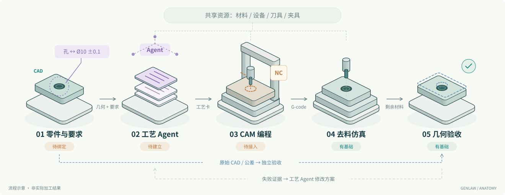

01 · 几何与要求绑定
模型理解标注，将孔、面、基准等特征关联到制造要求；程序确认引用存在、单位一致，避免关联到错误几何。
输出：① CAD / STEP 与特征、要求 JSON。采用模型版本与稳定 ID，不能只依赖易变的面序号。
ARCHITECTURE / DATA FLOW
从 CadQuery 零件和制造要求出发，沿四个环节走到 G-code 与几何报告。图中标出了每一步做什么、交出什么，以及失败之后如何返回修改。
拟定架构 · 尚未完成整链集成

模型理解标注，将孔、面、基准等特征关联到制造要求；程序确认引用存在、单位一致，避免关联到错误几何。
输出：① CAD / STEP 与特征、要求 JSON。采用模型版本与稳定 ID，不能只依赖易变的面序号。
资源库提供可用设备和工具；Agent 选择毛坯、装夹、工序顺序与参数。程序检查数据结构、关联和支持范围，错误回传 Agent。
输出：② 结构化工艺卡。JSON 是数据源，给人看的工艺卡表格或 PDF 由它生成。
需要开发的适配器将工艺卡映射为 ③ CAM Job。FreeCAD CAM 负责刀路计算，对应后处理器 输出目标控制器的代码。
输出：④ NC 仿真包。实际来料是原始毛坯或上道工序保留材料，不能拿目标零件当毛坯。
仿真读取最终 G-code，生成 ⑤ 剩余材料和执行记录。验收读取原始目标与公差，按特征和整体几何检查过切、欠切及尺寸位置。
输出：⑥ 报告与回放。未支持的指令、未完成执行或精度不足必须明确记录；需要时返回“不可判定”。